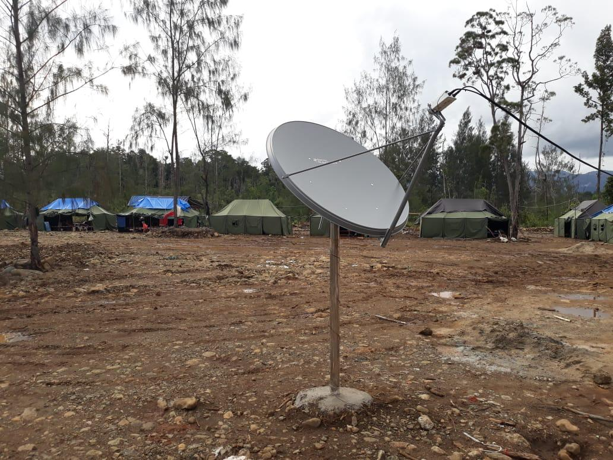

CONNECTIVITY
BUILT FOR MINING.
01
SITE CONNECTIVITY
Reliable connectivity infrastructure for remote mining operations ensuring seamless communication.
Explore Solution
02
SATELLITE CONNECTIVITY
Satellite backhaul connecting remote sites beyond terrestrial infrastructure limits.
Explore Solution
03
CAMP WIFI
High-capacity WiFi connectivity for worker camps, offices, and operational facilities.
Explore Solution

04
OPERATIONAL NETWORK
Network infrastructure supporting CCTV, IoT, fleet systems, dispatch, and communication.
Explore Solution